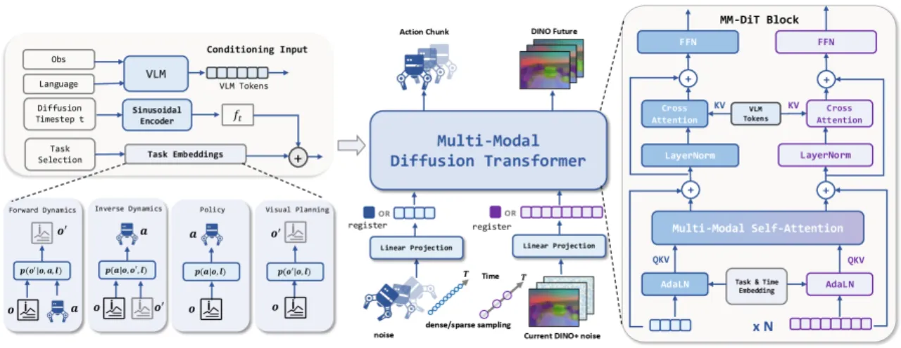
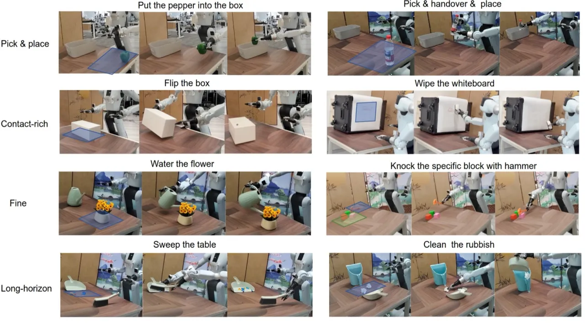
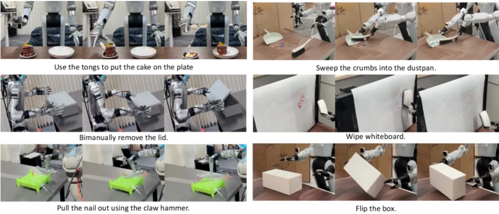
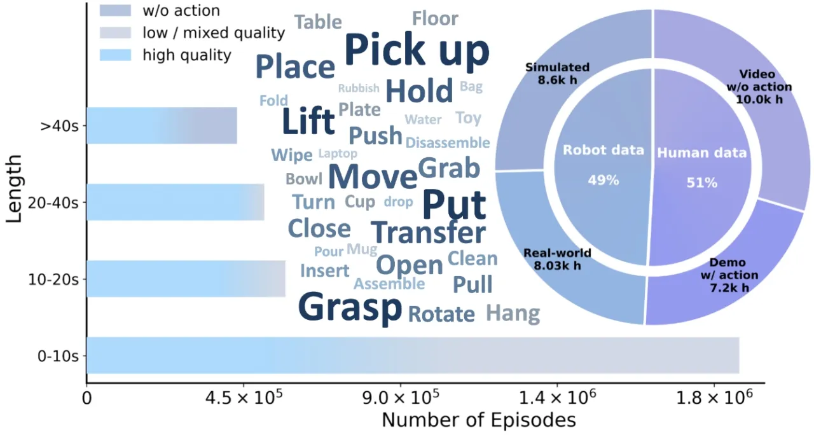
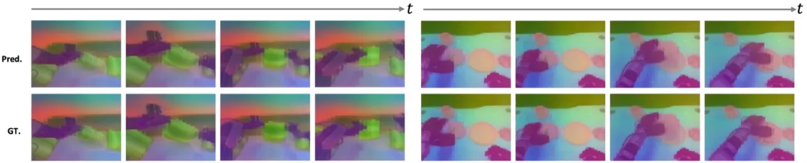
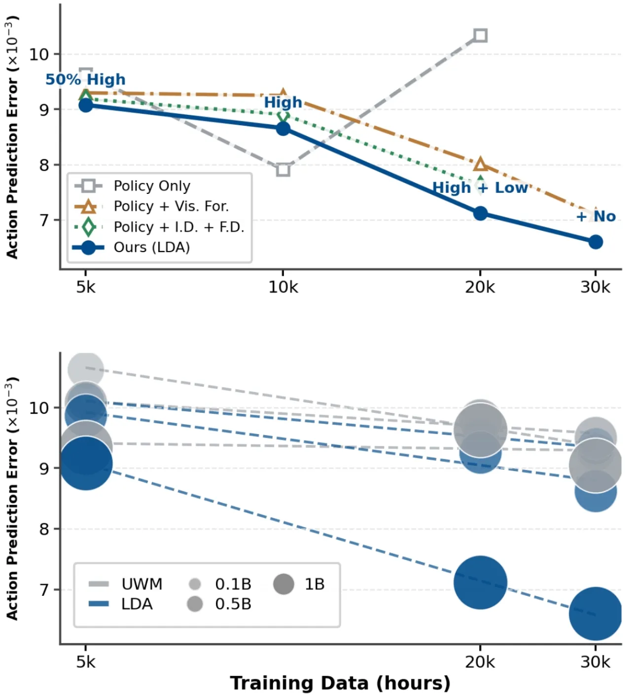
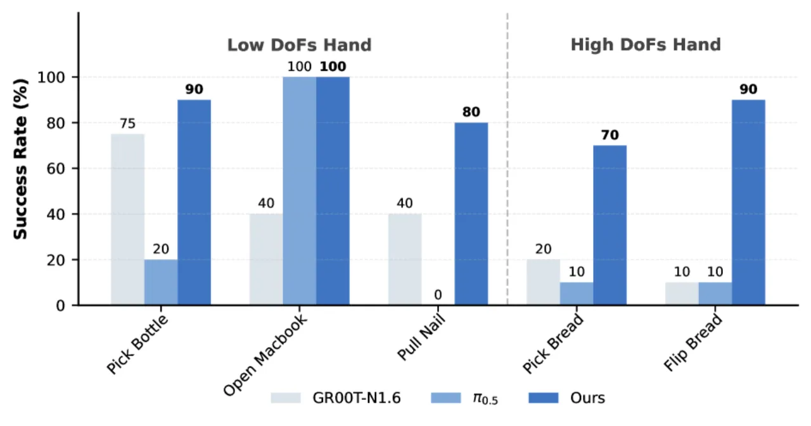
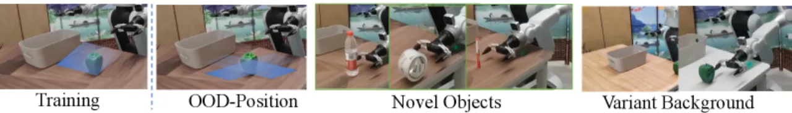

LDA-1B 提出一个统一世界模型框架，对策略学习、前向动力学、逆向动力学与视觉预测四类目标进行联合训练，使模型能够从异质具身数据（人类视频、低质量轨迹、高质量轨迹）中充分汲取知识，在真实机器人抓取、灵巧手操作和长视野任务中均超越 π0.5 和 GR00T-N1.6 等现有方法。
现有机器人基础模型主要依赖行为克隆（behavior cloning），无法充分利用异质具身数据中蕴含的可迁移动力学知识；统一世界模型（Unified World Model）虽然有潜力，却受限于"coarse data usage and fragmented datasets"。如何将数十万小时的人类视频、低质量轨迹与高质量机器人轨迹统一纳入训练，是提升可扩展性的核心挑战。
"Existing methods primarily rely on behavior cloning, which discards transferable dynamics knowledge embedded in heterogeneous embodied data."


LDA-1B 的核心是一个多模态扩散 Transformer（MM-DiT），对动作序列与未来视觉 latent 联合去噪，配合通用具身数据摄取（Universal Embodied Data Ingestion）框架，将不同质量与模态的数据统一分配训练目标。

框架将异质数据划分为三个角色：无动作人类视频监督视觉预测（visual forecasting）；低质量轨迹提供动力学监督；高质量轨迹同时支持策略学习与动力学学习。Register token 充当缺失模态的占位符，使模型能在统一架构下处理不完整输入。此外，论文构建了 EI-30k 数据集——8,030 小时真实机器人数据 + 8,600 小时仿真数据 + 7,200 小时有动作人类示范 + 10,000 小时无动作人类视频，总计超 30,000 小时，全部以 LeRobot 格式标准化并手动对齐末端执行器坐标系。

与像素空间 VAE 不同，LDA-1B 采用 DINO 特征作为视觉预测目标，"reduce redundant appearance modeling"并避免"entangling appearance, geometry, and dynamics at low-level feature granularity"。仿真实验显示，从 VAE 切换到 DINO 表示使成功率从 20.0% 大幅提升至 55.4%。


在仿真（RoboCasa-GR1）和真实机器人（Galbot G1 夹爪 + Unitree G1 灵巧手）上与 GR00T-N1.6、GR00T-EI10k、UWM-1B、π0.5 进行对比；采用少样本微调（few-shot fine-tuning）评估迁移效率。
| 模型 | 成功率（Success Rate） |
|---|---|
| UWM-1B | 19.3% |
| GR00T-N1.6 | 47.6% |
| GR00T-EI10k | 51.3% |
| LDA-1B（本文） | 55.4% |
消融实验显示，将视觉 latent 从 VAE 替换为 DINO 是最关键的设计选择，成功率从 20.0% 跃升至 55.4%。


| 测试条件 | LDA-1B 成功率 |
|---|---|
| 未见物体 / 背景 | 60% |
| 分布外（OOD）位置 | 40% |
在两项泛化测试中 LDA-1B 均显著超越基线模型。
在低质量轨迹加入后，LDA-1B 性能提升 10 个百分点；而 π0.5 在同等条件下下降 10–20 个百分点，验证了通用数据摄取框架对低质量数据的有效利用能力。
余弦相似度分析（gradient cosine similarity）显示，四项训练目标在 400k 步后梯度方向高度一致，表明联合训练没有导致目标冲突。
模型依赖冻结的 DINO 视觉编码器（DINOv3-ViT-s），预训练阶段视觉表示不参与更新，"reliance on fixed DINO visual features … may constrain generalization to new visual perspectives"。未来工作计划联合学习视觉表示与潜在动力学。
EI-30k 数据集及训练任务主要使用第一人称（head-mounted 或 wrist）视角，"predominantly egocentric camera viewpoints … may constrain generalization to new visual perspectives"，对第三人称视角场景的泛化尚未充分验证。
预训练需要 48 块 H800 GPU 共 4,608 GPU 小时。虽然推理时只需单次前向传播，但大规模预训练的资源门槛仍较高，限制了社区复现的便利性。（此条为设计推断，论文未单独列出。）